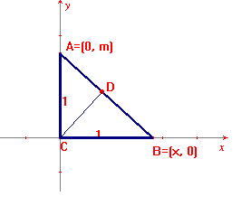

Sea el triángulo rectángulo ACB Y CD la altura trazada desde el vértice C y que cae sobre la hipotenusa.

Si los vértices están relacionados con las siguientes coordenadas:
C con (0, 0); A con (0, m) (m constante diferente de cero) y B con (x, 0) (x real, x variable).
Demostrar que al variar x la distancia entre el punto D y el punto (0, m/2) es constante.
Madrid, Edgar (2002) Comunicación personal.
Edgardo Madrid Cuello, licenciaciado en Matematicas en la Universidad de Sucre (Colombia).
Redacción del mismo problema modificada por el editor
Sea ACB un triángulo restángulo en C con el cateto b constante. Sea M el punto medio de AC, y D el pie de la altura del vértice C sobre la hipotenusa.
Demostrar que al variar el vértice B, DM permanece constante.